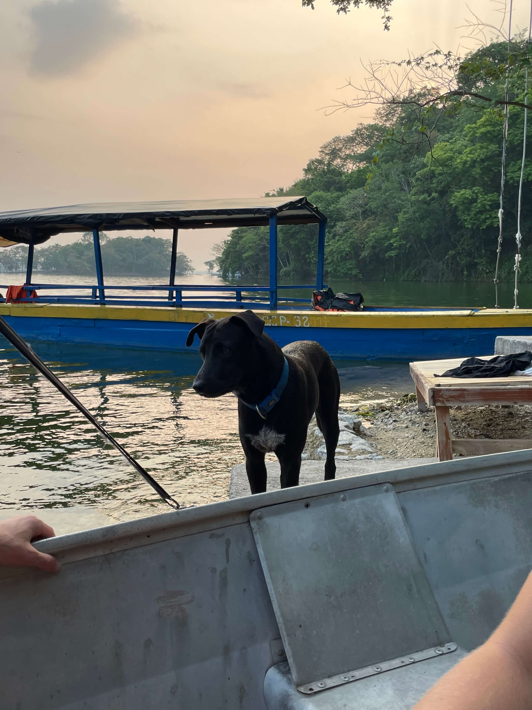
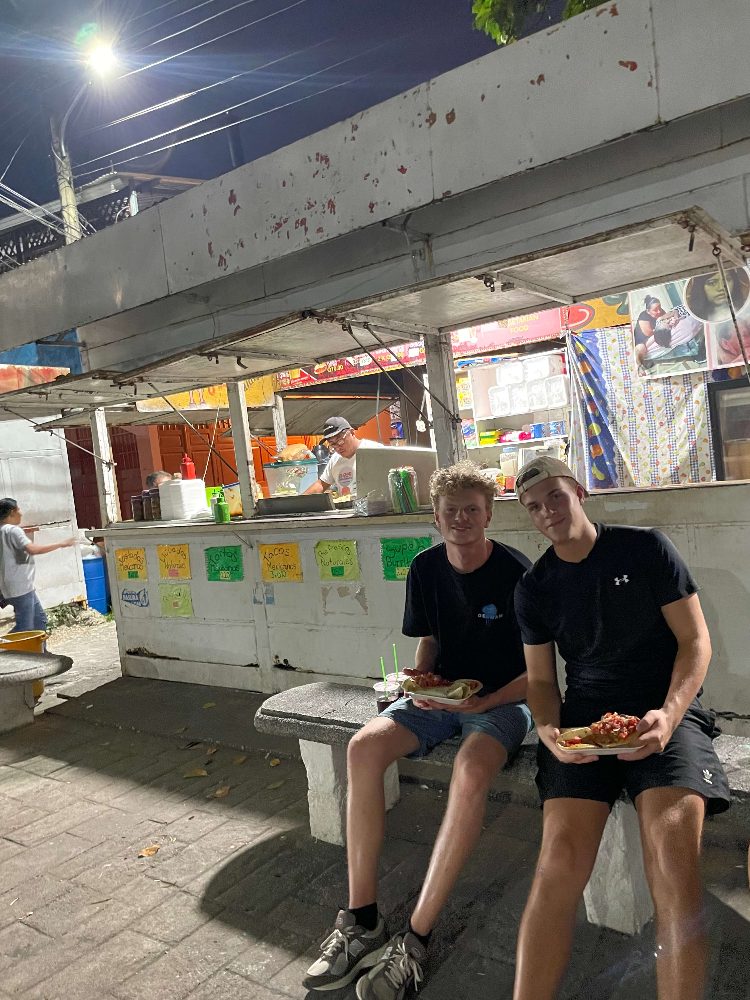

Flores
Onze tijd in Guatemala begon in Flores. We verbleven hier op een klein eilandje op een meer. Omdat het


Guatemala vond ik persoonlijk het vetste land waar we geweest zijn. Dat komt omdat we hier de gaafste natuur hebben gezien. Daarnaast hebben we hier in vrij korte tijd heel veel toffe fingen gezien en gedaan.
Onze tijd in Guatemala begon in Flores. We verbleven hier op een klein eilandje op een meer. Omdat het
Vanuit Flores hebben we een overnachting gedaan in Tikal, dat is een maya ruïne midden in de jungle. Omdat dit midden in de jungle ligt is het niet altijd gebruikelijk om hier te verblijven maar gelukkig was er een accommodatien waar wij konden verblijven. Wij wilde hier graag overnachten omdat we in de ochtend een sunrise tour hadden. We gingen samen met een tourgide om 3 uur S'ochtend de jungle in om vervolgens de zon's opgang te bekijken. Dit was een ongelovelijke ervaring omdat je zo vroeg ook alle dieren wakker hoort worden. In combinatie met de opkomende zon boven de jungle met de maya ruïne's was dit een onvergetelijke ervaring.
Vanuit Flores hebben we een overnachting gedaan in Tikal, dat is een maya ruïne midden in de jungle. Omdat dit midden in de jungle ligt is het niet altijd gebruikelijk om hier te verblijven maar gelukkig was er een accommodatien waar wij konden verblijven. Wij wilde hier graag overnachten omdat we in de ochtend een sunrise tour hadden. We gingen samen met een tourgide om 3 uur S'ochtend de jungle in om vervolgens de zon's opgang te bekijken. Dit was een ongelovelijke ervaring omdat je zo vroeg ook alle dieren wakker hoort worden. In combinatie met de opkomende zon boven de jungle met de maya ruïne's was dit een onvergetelijke ervaring.
We sliepen in Antiqua toen we de Acatanengo gingen beklimmen. Dit was voor mij persoonlijk een van de hoogtepunten van onze hele reis. Letterlijk en figuurlijk. De vulkaan Acatenango is 3.976 meter hoog en hiermee een van de hoogste vulkanen van Guatemala. De hike naar de top is zwaar maar onvergetelijk mooi omdat je vanaf grote hoogte uitzicht hebt op de actieve Fuego vulkaan. Na een hike van ongeveer 8 uur kwamen we aan bij ons base-camp. Daarna hadden we nog de optie om de top van de Fuego vulkaan te beklimmen. Dit zou nog ongeveer 5 uur duren. Uiteindelijk heb ik dit gedaan. S ochtends hadden we nog een sunrise hike gedaan en daarna gingen we weer naar beneden.